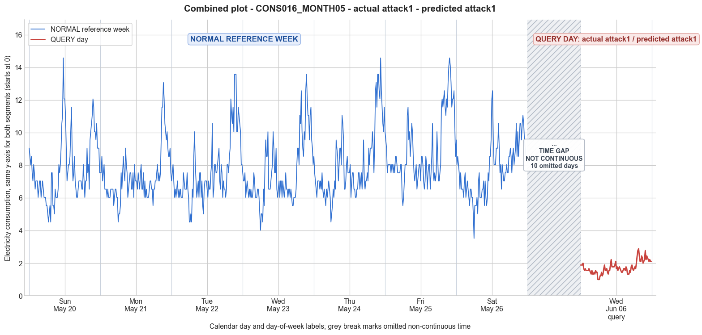

CONS016_MONTH05 · actual attack1 · predicted attack1
- Pair
- CONS016_MONTH05
- GT
- attack1
- Prediction
- attack1
- Binary GT
- attacked
- Binary Prediction
- attacked
- Source
- E010
- Parse
- stored
- Date
- 2012-06-06
- Weekday
- Wednesday
- Latency
- 0.79 min
- Tokens
- 7017

Final output
Classification: - Manipulated Identified Attack: - Most Likely: Attack 1 - Confidence: High - Reasoning: The query day preserves the characteristic daily consumption trend (low overnight, moderate daytime, distinct evening peak) seen in the reference week, but all values are scaled down by a roughly constant factor of 4–5×. This uniform magnitude reduction without distortion of the temporal pattern exactly matches Attack 1. Attack 3 (per-sample random scaling) would introduce shape distortions not seen here; Attack 4 (partial period reduction) would cause an abrupt change in trend within the day, but the query day shows a smooth, intact shape throughout. Attack_Behavior_Explanation: - How consumption values are manipulated relative to the normal week: The attacker multiplies every 15-minute reading by a constant random value between 0 and 1 (estimated ~0.2–0.25). The result is a uniformly scaled-down version of the genuine consumption profile. - Impact on magnitude and trend: Magnitude is significantly reduced across the entire day (mean drops from ~7.5 to ~1.74), while the daily trend (timing and relative variations) remains identical to the customer’s normal behavior. - Possible technical causes: Meter bypass (partial), magnetic interference, reverse current, or false data injection that applies a fixed scaling factor to all readings.
Prompt
You are a domain expert in smart grid security and electricity theft analysis, with deep knowledge of non-technical loss (NTL) attack patterns in smart meters. You are given: 1. A plot of one week of original (normal) energy consumption for a smart meter, provided as context for the customer's typical consumption behavior. 2. A plot of one day of energy consumption for the same smart meter, which may or may not be manipulated. Below are common attack types, each defined by how consumption values are altered, their impact on magnitude and trend, and their possible technical causes. Attack 0: Generated by replacing all electricity consumption samples with zero values for the entire observation duration. Simulates a scenario where no energy usage is reported at all. May be caused by a total meter bypass or severe meter malfunction. Completely eliminates both the trend and magnitude of the consumption profile. Attack 1: Multiplies the actual energy consumption by a constant random value between (0,1). The lower the factor, the higher the severity. Can be triggered by meter bypass, magnetic interference, reverse current, and false data injection. The consumption trend remains the same but the magnitude is uniformly reduced. Attack 2: Generated by replacing consumption samples with zeros for a random duration. Also known as an on-off attack. Can be caused by full meter bypass, false data injection, and reverse current. Changes both the trend and amplitude. Attack 3: The actual consumption is multiplied by different random factors between 0 and 1, with a unique factor per sample. Similar to Attack 1 but the scaling factor varies per reading. Caused by meter bypass, magnetic interference, and reverse current. Changes both the trend and amplitude. Attack 4: Simulates energy theft over a randomly selected period within the observation window. All measurements in that period are reduced. Caused by meter bypass, magnetic interference, reverse current, and false data injection. Changes both the trend and amplitude. Attack 5: Each sample is replaced by a false value obtained by multiplying the average normal consumption by a random variable between 0 and 1, with a different variable per sample. Caused by false data injection. Produces a completely different pattern from the original consumption profile, changing both trend and magnitude. Attack 6: A random cut-off point is selected and all consumption values above it are replaced by that cut-off value. The attacker avoids exceeding a predefined maximum limit. Mainly caused by false data injection. Changes both the trend and amplitude. Attack 7: A random cut-off point is subtracted from each sample; if the result is negative, zero is reported. Similar to Attack 6 but replaces exceeding values with zero instead of the cut-off point. May be caused by false data injection or total meter bypass. Does not change the trend but reduces overall consumption. Attack 9: All samples are replaced by the average daily energy consumption, resulting in a flat constant profile. Easily detectable because constant consumption does not reflect normal customer behavior. Caused by false data injection. Eliminates all trends. Attack 10: Reverses the consumption pattern without reducing the total amount. Applicable when the electricity company uses time-varying pricing, allowing the attacker to shift high consumption to off-peak periods. Caused by false data injection. Changes the trend without decreasing total consumption. Attack 12: The attacker replaces their consumption pattern with that of a lower-consuming user. The legitimate user unknowingly pays the adversary's electricity bill. Caused by false data injection. Attack IEEE: For each 15-minute interval across the entire day, the consumer either reports the actual electricity consumption or substitutes it with zero. The result is a profile where some intervals reflect real consumption while others are zeroed out, creating an irregular pattern across the full day. May be caused by false data injection. Changes both the trend and amplitude. Given the two plots, determine: 1. Whether the day is attacked or original - compare the flagged day against the normal week and assess whether the consumption pattern is consistent with normal behavior or shows signs of manipulation. If the day is consistent with the customer's typical consumption behavior, classify it as original and provide no further analysis. If manipulation is detected, proceed to point 2. 2. Which attack type this most likely is - identify the single most probable attack and justify your choice based on how the flagged day deviates from the normal week. 3. The behavior of the identified attack - explain how the consumption values are manipulated, their impact on magnitude and trend, and the possible technical causes behind this type of attack. Output Format: Classification: - Original | Manipulated Identified Attack: (fill only if manipulated) - Most Likely: Attack X - Confidence: High | Medium | Low - Reasoning: Why it matches Attack X and why Attack Y and Attack Z were ruled out (list top 2 alternatives considered) Attack_Behavior_Explanation: (fill only if manipulated) - How consumption values are manipulated relative to the normal week - Impact on magnitude and trend - Possible technical causes
Reasoning content
We are given consumption data for a reference week (7 days) and a query day (DAY_ID=3). The query day is labeled as DAY_ID=3, but note that the reference week also has a Day 3 (Wednesday). However, the query day has a different date: cal_month=6, dow=2, dom=17. The reference Day 3 has cal_month=5, dow=2, dom=3. So they are different days, but same day of week (Wednesday). The query day appears to be from a later week (June 6 vs May 30? Actually reference week Day 0 is May 27? Let's check: Day 0: cal_month=5, dow=6 (Sunday), dom=0? Possibly dom is day of month - it's 0-indexed? So Day 0 is the 27th? Actually dom=0 could be 1st day of month? We'll ignore the exact dates, but they indicate the query day is from a different week, likely a later Wednesday. We are to determine if the query day is attacked or original. Compare the statistics: Reference week days have means around 7.5-8.9, with min around 3.5-5.5, max around 12-14.7, std around 1.5-2.1. Query day: min=1.00, max=2.89, std=0.38, mean=1.74. This is drastically lower: the maximum consumption on the query day (2.89) is lower than the minimum on any reference day (the smallest min across reference days is 3.52 on Day 6). So the query day's consumption is reduced to about 20-25% of the normal level. The pattern also shows very little variation (std 0.38 vs 1.5-2.1). Looking at the actual readings: they oscillate between 1.00 and 2.89, with many values around 1.5-2.2. The pattern is not constant but does have some rising and falling, reminiscent of a typical daily pattern but scaled way down. The shape: early morning low, then a rise, then a peak around 2.89 in the evening, then decline. This resembles a normal daily pattern but with drastically reduced magnitude. The trend (temporal shape) seems similar to a normal day. For example, reference Day 3 (Wednesday) has a similar shape: lower in early morning, rise to a peak around 13-14 in the late morning/afternoon, then decline, then another peak in the evening? Actually looking at Day 3 data: starts around 7.5, fluctuates between 4 and 9, has a peak at the end of the day around 12-13.6. Query day: starts around 1.89, drops to ~1.55 during the day, then rises to ~2.89 in the evening. It's a much milder version of the same trend. So the trend (shape of the curve) seems preserved, but the magnitude is uniformly reduced by a factor of roughly 5-6. For instance, the query day max 2.89 vs reference day max ~13.57 -> factor ~0.21. Mean 1.74 vs 7.54 -> factor ~0.23. So it seems the consumption is multiplied by a constant factor around 0.2-0.25. Now, which attack matches this? Attack 1: "Multiplies the actual energy consumption by a constant random value between (0,1). The lower the factor, the higher the severity. ... The consumption trend remains the same but the magnitude is uniformly reduced." This exactly matches: the trend is the same shape, magnitude is uniformly scaled down. Attack 3: multiplies by different random factors per sample, which would alter both trend and magnitude (since each point is scaled differently, the shape would change). Attack 4: reduces consumption over a random period, which would change both trend and amplitude (some periods unchanged, others reduced). Attack 5: replaced by false value from average normal consumption multiplied by random variable, would produce a completely different pattern. Attack 6: cut-off, replaces high values with a cap, which would alter the trend (flatten peaks) but not reduce lows uniformly. Attack 7: subtracts a cut-off, negative becomes zero, would also alter trend differently. Attack 0: all zeros, not the case. Attack 2: on-off attack (zeroing for random duration), which would create sharp drops to zero, not seen here. Attack 9: constant average, not the case (there is variability). Attack 10: reverses pattern, not relevant. Attack 12: substitute pattern of lower user, which would likely change the shape entirely. Attack IEEE: zeroes some intervals, creating irregular pattern with zeros, not seen (no zeros, all values are non-zero). So Attack 1 is the best fit. Confidence: High, because the reduction factor appears constant across the day, and the trend shape is preserved. Thus, Classification: Manipulated. Identified Attack: Attack 1. Confidence: High. Reasoning: The query day's consumption pattern retains the typical daily trend (morning valley, evening peak) but all values are reduced by roughly a factor of 4-5 compared to reference week. This uniform scaling matches Attack 1. Attack 3 would cause varying scaling per sample, distorting the trend; Attack 4 would cause a partial reduction, not across the whole day. Attack_Behavior_Explanation: The consumption values appear to be the actual consumption multiplied by a constant factor (~0.2-0.25). This uniformly reduces the magnitude, so the overall consumption is lowered while keeping the daily usage shape intact. The trend remains the same. Possible causes include meter bypass (partial), magnetic interference, reverse current, or false data injection that scales readings uniformly. Output accordingly.